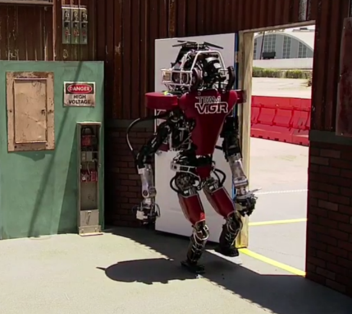
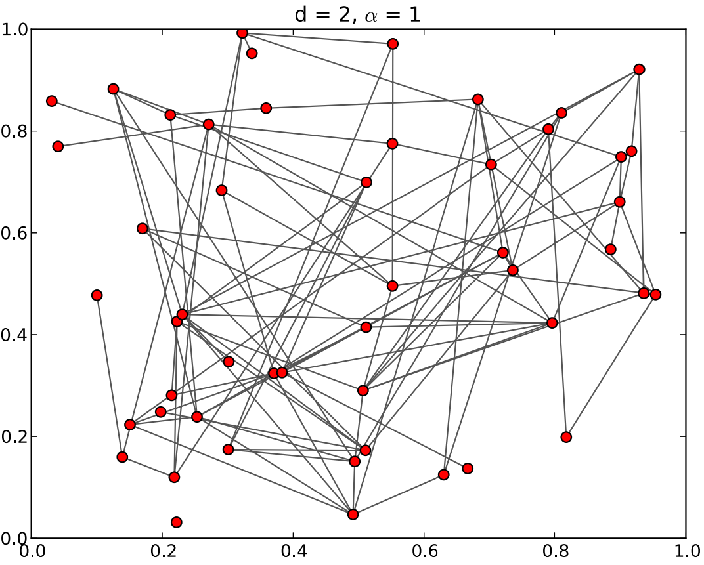
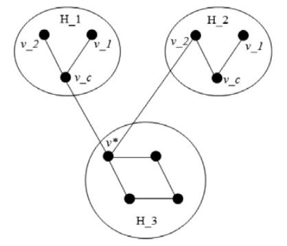
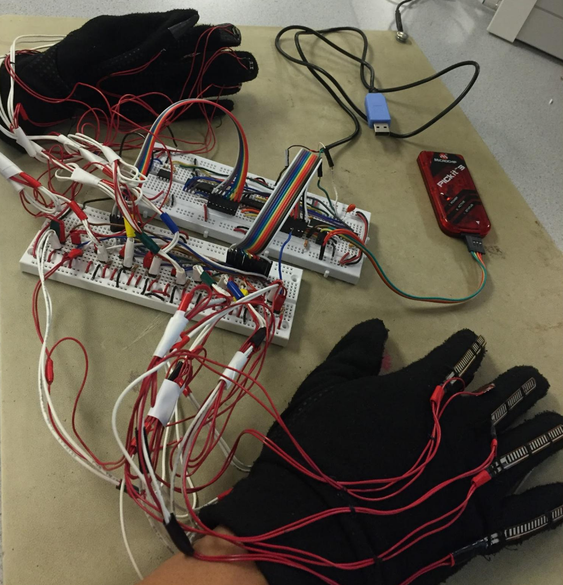

|
Vitchyr Pong
I am a Ph.D. student at UC Berkeley, where I am advised by Sergey
Levine. I'm interested in using deep reinforcement learning for
robotics. I did my undergrad at Cornell University, where I worked with
Ross Knepper and Hadas Kress-Gazit.
CV /
LinkedIn /
GitHub
vitchyr at berkeley dot edu
|
|
|  |
Reactive high-level behavior synthesis for an Atlas
humanoid robot
Spyros Maniatopoulos,
Philipp Schillinger,
Vitchyr Pong,
David D. Connor,
Hadas Kress-Gazit
IEEE International Conference on Robotics and Automation,
2016.
We present and end-to-end approach for the automatic generation of code
that implements high-level robot behaviors in a verifiably correct
manner. We start with Linear Temporal Logic (LTL) equations and use them
to synthesize a reactive mission plana that is gauranteed to satisfy the
formal specifications.
|
|  |
Two evolving social network models
Sam Magura,
Vitchyr Pong,
Rick Durrett,
David Sivakoff
ALEA, Lat. Am. J. Probab. Math. Stat.,
to appear.
We study two different social network models. We prove that their
stationary distributions satisfy the detailed balance condition and give
explicit formulas for the stationary distributions. From this
distribution, we also obtain results about the degree distribution,
connectivity, and diameter for each model.
|
|  |
Chomp the Graph
Sam Magura,
Vitchyr Pong,
Elliot Cartee,
Kevin Valakuzhy
Broad Street Scientific, 2012
Chomp the Graph is a terminating impartial game that adheres to
normal play convetion. By the Sprague-Grundy Theorem, Chomp has a
number, which determines if a position leads to a win if played
optimally. We prove the nimber of certain types of graphs.
|
|  |
Keyboard Gloves
Vitchyr Pong, Gulnar Mirza, 2015
Demo / Video
Explanation
Designed and created gloves that allow users to type on any hard
surface as if they were using a QWERTY keyboard. The gloves recognize
the standard QWERTY keyboard layout by recognizing which finger is
pressed via push buttons, and how bent the finger is via flex sensors.
We combined knowledge of analog circuit design, serial communication
protocols, and embedded programming to implement this project.
|
|